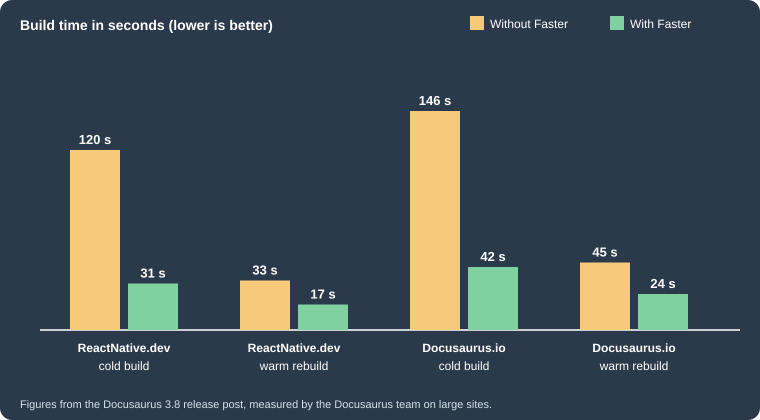
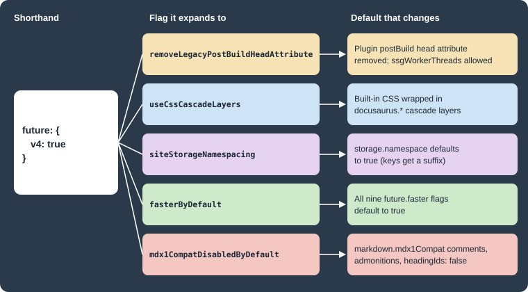

Docusaurus Faster and v4 Readiness
|
This content was generated with the assistance of AI and should be verified against the official documentation before being relied on in production. |
This page was written against Docusaurus 3.10.2 (the last release of the 3.x line) and checked on 2026-10-26. Docusaurus
changes its defaults only at major versions, so it ships the next major’s behaviour early, behind switches under the
future key of docusaurus.config.ts. Two families of switches matter: future.faster swaps the build tools for faster
ones, and future.v4 opts in to the defaults of Docusaurus v4. The examples use the documentation site of Pocket Units,
the small units-conversion library with a C# and a Python implementation, in a scratch site generated by
create-docusaurus@3.10.2 (classic preset, TypeScript, React 19). Every configuration below was loaded or built with
Docusaurus 3.10.2 on Node.js 24.
Why two sets of flags
A Docusaurus site is built in three steps: the MDX files are compiled to React, a bundler produces the browser and Node.js bundles, and the server-side rendering step writes one HTML file per route. Historically each step used a JavaScript tool (Babel, webpack, Terser, cssnano). Replacing them with Rust tools makes the build faster but can change the output slightly, so it could not be forced on existing sites in a minor release. The project therefore offers the new tools as opt-in flags, and promises to make them the default in v4.
Docusaurus documents a naming rule for the future object. Flags with an experimental_ or unstable_ prefix may change in
a minor release. Flags namespaced by v4 are expected to become the default in the next major version, and are less
likely to change. As of 3.10.2 the object has three relevant members:
-
faster: a boolean or an object of build-tool flags. It needs the@docusaurus/fasterpackage. -
v4: a boolean or an object of upcoming defaults. -
experimental_routerandexperimental_vcs: experimental members, outside the scope of this page apart from the version control strategy that one Faster flag selects.
The key future.faster was called future.experimental_faster until 3.9, and was marked stable in 3.10. The old name now
stops the startup with a message. Running the configuration loader on a file that still uses the old names printed:
Error: The Docusaurus config `future.experimental_faster` has been renamed to `future.faster`. Please update your Docusaurus config. Error: The Docusaurus config `future.experimental_storage` has been promoted to a stable top-level `storage` config attribute. Please move your storage config to the top level.
Docusaurus Faster
Installation
Docusaurus Faster is a separate package so that sites that do not use it do not download Rspack and SWC. It must have the
same version as the other Docusaurus packages. The site generated by create-docusaurus@3.10.2 already lists it. The
scratch site’s package.json has it next to the core and the preset:
{
"dependencies": {
"@docusaurus/core": "3.10.2",
"@docusaurus/faster": "3.10.2",
"@docusaurus/preset-classic": "3.10.2"
}
}For a site that does not have it yet, the install line pins the version:
npm i -E @docusaurus/faster@3.10.2Source: Docusaurus 3.6 release post
The package depends on the Rust tools that do the work: @rspack/core, @swc/core, @swc/html, swc-loader,
lightningcss and browserslist. Enabling a flag without the package fails the build. With @docusaurus/faster temporarily
removed from node_modules and future: {v4: true} in the configuration, docusaurus build stopped with:
[ERROR] Error: Unable to build website for locale en. [cause]: Error: To enable Docusaurus Faster options, your site must add the @docusaurus/faster package as a dependency.
The nine flags
Each flag replaces one tool or one step. They can be set one by one, or all at once with future: {faster: true}.
| Flag | What it does | Replaces | Since |
|---|---|---|---|
|
Transpiles JavaScript and TypeScript with SWC. |
Babel |
3.6 |
|
Minifies JavaScript with SWC. |
Terser |
3.6 |
|
Minifies HTML and the inlined JavaScript and CSS with SWC. |
html-minifier-terser |
3.6 |
|
Minifies CSS with Lightning CSS. |
cssnano and clean-css |
3.6 |
|
Bundles the app with Rspack. |
webpack |
3.6 |
|
Keeps a persistent Rspack cache so that later builds are faster. Needs |
nothing (new) |
3.8 |
|
Compiles each MDX file once instead of once for the browser and once for Node.js. |
double compilation |
3.6 |
|
Runs static site generation in a pool of Node.js worker threads. Needs |
single-threaded rendering |
3.8 |
|
Selects the |
per-file |
3.10 |
The first column of versions comes from the release posts: 3.6 introduced the key (then called experimental_faster) with
the first five flags and the MDX cache, 3.8 added the persistent cache and the worker threads, and 3.10 added gitEagerVcs
and made the key stable.
Dependencies between flags
Two flags refuse to start without another one. The loader reports each case with a message that names both flags, so the error is easy to read:
-
rspackPersistentCacherequiresrspackBundler. -
ssgWorkerThreadsrequiresfuture.v4.removeLegacyPostBuildHeadAttribute.
Running the loader on small files gave these messages:
Error: Docusaurus config flag `future.faster.rspackPersistentCache` requires the flag `future.faster.rspackBundler` to be turned on.
Error: Docusaurus config `future.faster.ssgWorkerThreads` requires the future flag `future.v4.removeLegacyPostBuildHeadAttribute` to be turned on.
If you use Docusaurus Faster, we recommend that you also activate Docusaurus v4 future flags: `{future: {v4: true}}`
The second message points to the way out that the project recommends: if you use Faster, turn on the v4 flags too. The
removeLegacyPostBuildHeadAttribute flag removes the old postBuild({head}) plugin API, which prevents the worker
threads optimisation, so a community plugin that still uses it must be updated first.
What changes in the output
The documentation says that the Faster tools were adopted conservatively, so the generated site should look the same. Two differences are stated in the 3.6 release post: the HTML minifier now warns about invalid HTML markup, and the static HTML output is about 5% smaller. Faster also consumes less memory.
The published build-time figures
The Docusaurus team published a benchmark in the 3.8 release post, measured on two large sites (ReactNative.dev, about 2000 pages, and the Docusaurus site itself). The figure redraws those numbers; the cold build is the first build with no cache, and the warm rebuild is the next build with the caches in place.

The same posts give per-flag measurements: the 3.6 post reports a production build that is 2 to 4 times faster across three community sites, and the 3.8 post reports about 2 to 5 times faster bundling on rebuilds with the persistent cache, and about twice faster static site generation with the worker threads, measured on a MacBook Pro M3. These are the project’s own figures on large sites; the gain on a small site is small in absolute terms.
I measured the Pocket Units starter site (about 13 pages) on one machine, with the caches cleared before the first build. The numbers are only an illustration of the direction, not a benchmark.
| Configuration | Cold build | Warm rebuild |
|---|---|---|
no |
7.8 s |
1.7 s |
|
2.7 s |
1.6 s |
On this tiny site the cold build was about three times faster, in line with the published range, and the warm rebuild
did not change measurably. The webpack build prints [webpackbar] Compiling Client lines, and the Rspack build does not.
Preserving the persistent cache
rspackPersistentCache writes to node_modules/.cache/rspack. The cache helps only if that folder survives between
builds. Hosts such as Netlify and Vercel keep it automatically according to the 3.8 post. In other CI systems, such as GitHub Actions, you have to restore
the folder yourself, for example with a cache step keyed on the lock file. Without it, every CI build is a cold build and
the flag costs nothing but also gains nothing.
The v4 future flags
The five flags
future.v4 gathers the changes that Docusaurus plans to apply by default in v4. Each one is a breaking change for some
sites, which is why none is on by default in 3.x.
| Flag | Effect |
|---|---|
|
Removes the legacy |
|
Enables the CSS cascade layers plugin, which wraps the built-in CSS in layers so that your own unlayered CSS always wins over it. |
|
Makes |
|
Makes every |
|
Makes every |
The first two flags came with 3.8, where the project introduced the v4 flags and the shorthand future: {v4: true}. The
last three are listed as v4 flags in 3.10.
What the v4 shorthand really does
The shorthand is easy to underestimate. Because it includes fasterByDefault, it also turns on all nine Faster flags,
which means a site generated by create-docusaurus 3.10 (it contains future: {v4: true}) already builds with Rspack.
A site that only wants the v4 defaults, and not Rspack, must opt out explicitly.
I loaded three configurations with the Docusaurus config loader and printed the normalised future.faster, markdown.mdx1Compat and
storage values:
import {loadSiteConfig} from '@docusaurus/core/lib/server/config.js';
const {siteConfig} = await loadSiteConfig({
siteDir: process.cwd(),
customConfigFilePath: process.argv[2],
});
console.log(JSON.stringify({
faster: siteConfig.future.faster,
mdx1Compat: siteConfig.markdown.mdx1Compat,
storage: siteConfig.storage,
}, null, 2));The loader is an internal module, so the script is a diagnostic and not a supported API. Its results were:
| Setting | No future key |
future: {v4: true} |
future: {faster: true} |
|---|---|---|---|
the nine |
all |
all |
configuration rejected |
|
all |
all |
not loaded |
|
|
|
not loaded |
The third column stops with the error shown earlier, because faster: true includes ssgWorkerThreads, which needs
removeLegacyPostBuildHeadAttribute. So faster: true alone is not a valid configuration in 3.10.2; either add the v4
flag or name only the flags you want.
Faster is opt-in in the sense that the faster key is empty unless something sets it, but a site that sets
v4: true, as the generated site does, has already opted in to all of it.

Opting out of one default
Explicit values win over the defaults that fasterByDefault and mdx1CompatDisabledByDefault set. The following
configuration keeps webpack and the MDX v1 admonition titles while taking every other v4 default. It is a complete
docusaurus.config.ts for the Pocket Units site.
import type {Config} from '@docusaurus/types';
import type * as Preset from '@docusaurus/preset-classic';
const config: Config = {
title: 'Pocket Units',
tagline: 'A tiny units-conversion library for C# and Python',
url: 'https://example.com',
baseUrl: '/',
onBrokenLinks: 'throw',
future: {
v4: true,
faster: {
rspackBundler: false,
rspackPersistentCache: false,
},
},
markdown: {
mdx1Compat: {
admonitions: true,
},
},
presets: [
[
'classic',
{
docs: {sidebarPath: './sidebars.ts'},
blog: false,
} satisfies Preset.Options,
],
],
};
export default config;Loading it printed the flags below. rspackPersistentCache: false is part of the file on purpose: the persistent cache
needs Rspack, and under v4: true it defaults to true, so leaving it out gives the same dependency error as before.
"faster": { "rspackBundler": false, "rspackPersistentCache": false, "swcJsLoader": true,
"swcJsMinimizer": true, "swcHtmlMinimizer": true, "lightningCssMinimizer": true,
"mdxCrossCompilerCache": true, "ssgWorkerThreads": true, "gitEagerVcs": true },
"mdx1Compat": { "admonitions": true, "comments": false, "headingIds": false },
"storage": { "type": "localStorage", "namespace": true }
Storage namespacing
siteStorageNamespacing changes browser storage keys from theme to theme-<hash>. The aim is to stop two sites on
the same origin, such as two localhost:3000 apps or /app and /docs under one domain, from overwriting each other’s
keys. The consequence for a deployed site is that visitors' saved colour mode and tab choices are reset once. The
storage key itself is top-level and stable since 3.10:
const config = {
storage: {
type: 'localStorage',
namespace: true,
},
};Source: Docusaurus 3.10 release post
type is localStorage or sessionStorage, and namespace is a boolean or a string that is appended to the keys.
Cascade layers
With useCssCascadeLayers, the CSS of Infima, the theme and the plugins is placed inside layers named
docusaurus.infima, docusaurus.theme-common, docusaurus.theme-classic and so on. I built the starter with and without
the flag and searched the generated stylesheet: the layered build contains @layer docusaurus.infima and the other
layers, and the default build contains none. CSS that you write in custom.css is not in a layer, so it always beats
the built-in rules whatever their specificity or order. The flag can slightly change which rule applies on sites with
heavily customised or swizzled styles. See
Styling, theming and swizzling for the cascade.
Syntax being phased out
The three mdx1Compat options
Docusaurus compiled files with MDX v1 until v3. MDX v1 was forgiving, and Docusaurus added three conveniences on top
of strict MDX v3. Since 3.0 the markdown.mdx1Compat object keeps them working, and all three default to true. In v4
they default to false, and future.v4.mdx1CompatDisabledByDefault previews that.
| Option | Old syntax (works with the option on) | Strict replacement | Result with the option off |
|---|---|---|---|
|
|
|
compile error |
|
|
|
the lines are shown as plain text |
|
|
|
compile error |
Source: Docusaurus 3.10 release post
I built a one-page Pocket Units document for each form, once with the default compatibility and once with
future: {v4: true}. The results show that the three options fail in different ways:
| Source | Compatibility on | After v4: true |
|---|---|---|
|
builds |
fails: |
|
builds |
builds |
|
builds, id |
fails: |
|
builds, id |
builds, id |
|
builds, id |
builds, id |
|
builds as an admonition titled My Title |
builds with no error; the lines appear as a plain paragraph |
|
builds as an admonition |
builds as an admonition |
The last two rows matter most. The old admonition title is not reported when the option is off: it is silently rendered as text, so a page can lose its warning box without any build error. Search the content for admonition openers that have text after the type before turning the flag on.
Comments
MDX v3 has no HTML comments. A blog post can be truncated with {/* truncate */} instead of
<!-- truncate -->, and the default truncate marker accepts both. For editor and formatter support, the migration guide
also recommends {/* prettier-ignore */} before content that Prettier cannot parse as MDX v3.
Admonition titles
The directive syntax puts the title in square brackets, so Docusaurus can use the generic remark-directive plugin:
:::warning[Rounding]
`Convert(0.1, "m", "ft")` is rounded to six decimals.
:::Source: Docusaurus 3.10 release post
The migration to v3 also made :::warning an official yellow admonition (it was an undocumented red one in v2) and deprecated :::caution. Use
:::warning[caution] for a yellow box or :::danger for the red one.
Heading IDs
The explicit heading ID {#my-id} is another Docusaurus extension that is not valid MDX. The 3.10 release post introduces
a native form that is a JSX comment, {/* #my-id */}, and the migration guide shows the escaped classic form
\{#my-id}, which still produces the same ID. The CLI can write and convert IDs.
npx docusaurus write-heading-ids --syntax mdx-comment --migrateIts options are --syntax (classic or mdx-comment, default classic), --migrate (convert existing IDs to the target
syntax), --overwrite (regenerate existing IDs from the heading text) and --maintain-case (keep the casing of the
heading text). On a file with one classic ID and one heading without an ID the command rewrote the file to:
## Meters to feet {/* #meters-to-feet */}
### Plain heading {/* #plain-heading */}The command processes all documents of the site, so the starter documents were changed too; run it on a clean working tree and review the
diff. --migrate keeps the text of each existing ID, so incoming links to the anchors keep working.
The v3 migration guide still says that classic IDs should stay enabled until a new syntax is provided. The 3.10 release post is the newer source and introduces the JSX comment form.
Other strictness changes
Some constructs were already errors in v3 and are not controlled by the options. The migration guide lists them with the error messages:
-
A
{that does not start a valid JavaScript expression (Could not parse expression with acorn). Use inline code, the entity{, or\{. -
A
<that does not start a valid tag, such as<5orArray<T>in prose (Unexpected character,Expected a closing tag). Use inline code,<or\<. -
Autolinks written as
http://localhost:3000. Write a regular Markdown link or the bare URL. -
A colon after a word, such as
re:Invent, parsed as a text directive. Escape it as\:or add a space. -
Indented code blocks, which MDX no longer treats as code. Use fences.
-
Emphasis next to punctuation in languages that do not use spaces, where
**can stop working.
Files that contain none of these can stay .md, but the project recommends .mdx for any file that uses MDX
features, because .md files will be parsed as CommonMark in a future version. The option markdown.format accepts
mdx (the default), md and detect (by file extension), and CommonMark mode does not yet have full feature
parity with MDX.
Recap of the v2 to v3 migration
Sites that are still on v2 meet the v3 changes first, and v4 readiness builds on them. The guide groups them as dependencies, MDX and other breaking changes.
| Area | Change in Docusaurus v3 |
|---|---|
Runtime |
Node.js 18 or later (3.9 moved the minimum to Node.js 20), React 18 or later, TypeScript 5.1 or later. |
MDX |
MDX v1 replaced by MDX v3: stricter |
Packages |
|
Configuration |
ESM and TypeScript configuration files supported, config loader changed from import-fresh to jiti, |
Content |
|
Themes |
Docs theme components refactored: delete and re-swizzle any ejected |
Tooling |
The |
Math plugins are ESM only, so a CommonJS configuration must use an async function with a dynamic import(). The page on
diagrams and math shows the working configuration.
Other deprecations on the way to v4
-
onBrokenMarkdownLinksat the top level is deprecated since 3.9 and removed in v4. Usemarkdown.hooks.onBrokenMarkdownLinksandmarkdown.hooks.onBrokenMarkdownImages. The top-levelonBrokenLinksstays and acceptsignore,log,warnandthrow. -
future.experimental_storagebecame the top-levelstoragein 3.10. -
The build of 3.10 requires Node.js 20 or later, and TypeScript 6 is the default for new sites (it needs
ignoreDeprecations: "6.0"in the generatedtsconfig.json). -
React 19 is supported.
Source: Docusaurus 3.10 release post
See Configuration for the complete list of configuration keys.
Upgrade checklist
The project’s own advice is to adopt the changes one at a time, building after each step, and to read the release post of each minor version because new future flags appear in minor releases. The order below goes from the cheapest and most reversible step to the strictest one.
-
Update every
@docusaurus/*package to the same 3.x version and check that community plugins and themes support it. -
Run a normal build and fix
onBrokenLinksand the deprecation warnings first. -
Add
@docusaurus/fasterat the same version. Enable the flags withfuture.faster, building after each one if you want to find a regression. Remember thatrspackPersistentCacheneedsrspackBundlerand a cachednode_modules/.cache. -
Turn on
removeLegacyPostBuildHeadAttribute, thenssgWorkerThreads. If a community plugin fails, update or replace it. -
Turn on
useCssCascadeLayersand compare the pages in a browser, with extra care for swizzled components and custom CSS. -
Turn on
siteStorageNamespacingknowing that visitors' stored preferences reset once. -
Migrate the content: HTML comments to JSX comments, admonition titles to square brackets, heading IDs with
write-heading-ids --syntax mdx-comment --migrate, and rename files that use MDX features to.mdx. -
Turn on
mdx1CompatDisabledByDefaultlast, and search the content for old admonition titles that would become plain text. -
Replace the five individual flags with
future: {v4: true}, which also pulls in new v4 flags that later 3.x minors may add. Read the release post of each minor before upgrading.
Pitfalls and version notes
-
future: {faster: true}alone is invalid in 3.10.2; it needs the v4 head attribute flag (orssgWorkerThreads: false). -
future: {v4: true}enables Rspack. Opting out ofrspackBundleralso requiresrspackPersistentCache: false. -
future: {v4: true}without@docusaurus/fasterin the dependencies fails with the message that asks for the package. -
The persistent cache does nothing in CI unless
node_modules/.cacheis restored between runs. -
With the MDX v1 options off, an old admonition title is not an error: the box disappears.
-
Old names
future.experimental_fasterandfuture.experimental_storagestop the startup in 3.10. -
New future flags can appear in any minor release, so the
v4: trueshorthand can change behaviour when you upgrade the minor version. -
This page documents 3.10.2. Docusaurus v4 is available only as canary builds as of the check date, so none of the v4 behaviour above was run on a v4 release.